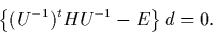

Re-writing Equation 3.2.40 in matrix notation gives
| (H - ES)c = 0. | (35) |
S is now written in terms of an upper triangular matrix using Choleski decomposition,
| S = Ut U. | (36) |
If we then define a vector d through Uc = d, we can rewrite Equation 3.2.41 as a standard eigenvalue problem
|  | (37) |
Evaluation of U and U-1 is an O(N3) problem, and the eigenvalues are then found using a Householder scheme. Since the occupied states only represent a small fraction of the Hamiltonian eigenstates, the required eigenvectors are most efficiently found by inverse iteration since only the required states are calculated. Nonetheless this is normally the time dominant step, scaling as O(N3).